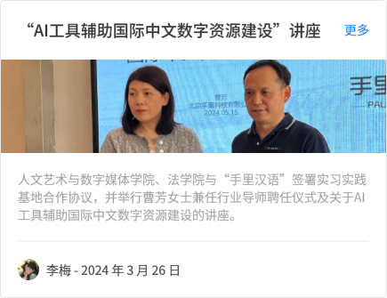

办学理念


发展历程
办学理念
组织结构
办学理念
1.跨学科融合:新媒体传播系以文理工学科交叉融合为特色，结合传播学、新闻学、社会学及新媒体的基本理论和方法与技术，培养既有系统的传播学与新闻学知识，又具备新媒体技术能力的复合型人才。
2.理论与实践并重:除了传授理论知识，该系还非常注重实践技能的培养。学生将深入理解新媒体技术，熟悉各类新媒体传播环境，并掌握新媒体产品设计与传播的精髓。
3.紧跟行业趋势:新媒体传播专业面向全球传播行业理论与技术发展，依托中国数字新媒体产业发展趋势及其人才需求，确保教育内容与行业前沿保持同步。
4.全面素质培养:除了专业知识和技能，该系还注重培养学生的道德法规意识、文献检索能力、资料查询方法和撰写科学论文的能力，以及了解国内外现状及发展趋势的视野。
5.多样化课程:主要课程涵盖了传播学导论、新媒体概论、数字传播技术基础、人机交互技术及应用、数字图文处理、页面编排与创意、音视频采集技术、非线性编辑、动画编辑与设计等，高年级还将根据社会需要和行业发展开设前沿性专业选修课。
6.就业导向:该系致力于培养满足信息传播行业迫切需求的毕业生，毕业后能胜任新闻出版行业、媒介传播公司、新媒体、网络与电子商务企业、政府机构、大中型企业的媒体策划与传播工作，以及媒介教育与科研机构的新媒体研究工作。